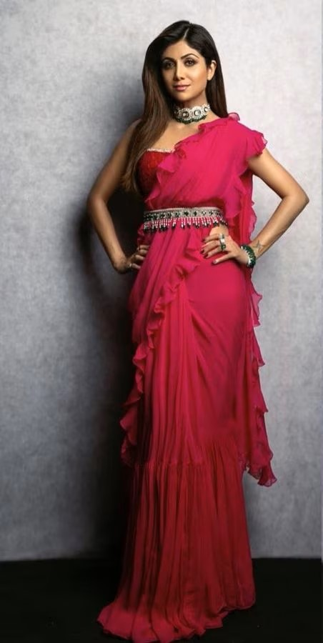
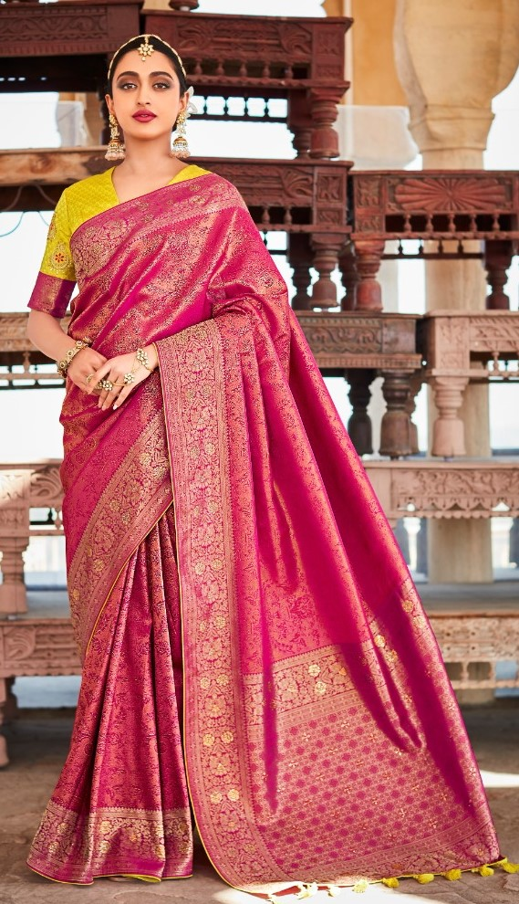

3.Belt style to accentuate the waistline

Just like belted lehengas, belted sarees are also raging big time.
Apart from being a big fashion trend that accentuates your figure,
it is also one of the best hacks to keep the saree intact. Eminent fashion designers and celeb divas approve of it.
PRICE:229$ =27990 ruppes
4.PATTU SAREE

Pattu' is a word in Tamil which means 'Silk'. In essence,
pattu sarees are lustrous silk sarees that originated in the southern part of India and have stood the test of time for centuries.
They are traditionally made from highly prized silk yarns that are hand-woven using intricate designs and patterns.
PRICE:339$ =39990 ruppes